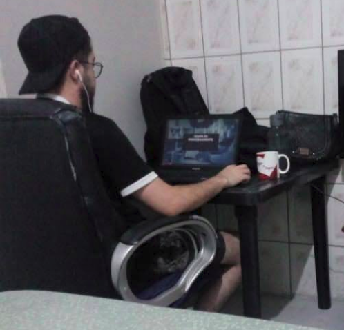

HTML
Experienced
Olá, tudo bem? Me chamo
Analista de QA | Experiência em WEB, Mobile e API | Facilitador Ágil
Conheça mais

+ de 9 anos na área de tecnologia
Já atuei como:
Tecnólogo em Desenvolvimento Full Stack - Estácio
Engenheiro de Qualidade de Software - EBAC
Inglês (B1) - ETW idiomas
Minha jornada na tecnologia começou de forma desafiadora, mas esses desafios moldaram minha determinação e me ensinaram a nunca desistir. Iniciei minha carreira atuando com suporte ao usuário em empresas como SONDA IT, Grupo Protege, SGS e Equifax | BoaVista. Essa experiência foi essencial para desenvolver uma visão prática das necessidades dos usuários finais e entender os desafios enfrentados no dia a dia.
Posteriormente, na Stone Co., dei meus primeiros passos na área de DevOps, criando scripts de testes e explorando ferramentas que ampliaram minhas habilidades técnicas. Essa transição foi o ponto de partida para minha atuação como QA (Quality Assurance), área onde me dedico a assegurar a excelência de sistemas por meio de análises criteriosas e testes abrangentes.
Hoje, possuo ampla experiência em testes para aplicações web, mobile e APIs, incluindo testes funcionais, de regressão, aceitação, integração, performance, segurança e usabilidade. Trabalho com testes manuais e automatizados, registrando defeitos, acompanhando resoluções e elaborando relatórios que garantem a eficiência e a confiabilidade dos sistemas.
Sempre que possível, dedico-me a estudar algo novo, explorando conhecimentos que ampliem minhas habilidades e me ajudem a enfrentar novos desafios. Vejo cada projeto como uma oportunidade de crescer e contribuir para soluções que façam a diferença.
Além da minha carreira, sou cristão, casado e pai da Olivia, que é minha maior inspiração. Apaixonado por esportes e pela cultura japonesa, sigo a máxima de Sun Tzu: "Toda batalha é vencida antes mesmo de ser lutada."
Meu objetivo é continuar evoluindo como QA, enfrentando desafios que impulsionem minha carreira e me permitam entregar resultados de excelência, sempre com dedicação e comprometimento.
Explore minha
Experienced
Experienced
Intermediate
Basic
Basic
Intermediate
Basic
Intermediate
Intermediate
Intermediate
Basic
Basic
Intermediate
Intermediate
Básico
GCP
AWS
Scrum e Kanban
CI/CD
GitLab
Terraform
Postman
Cypress
Selenium
Explore meus recentes


Entre em Contato